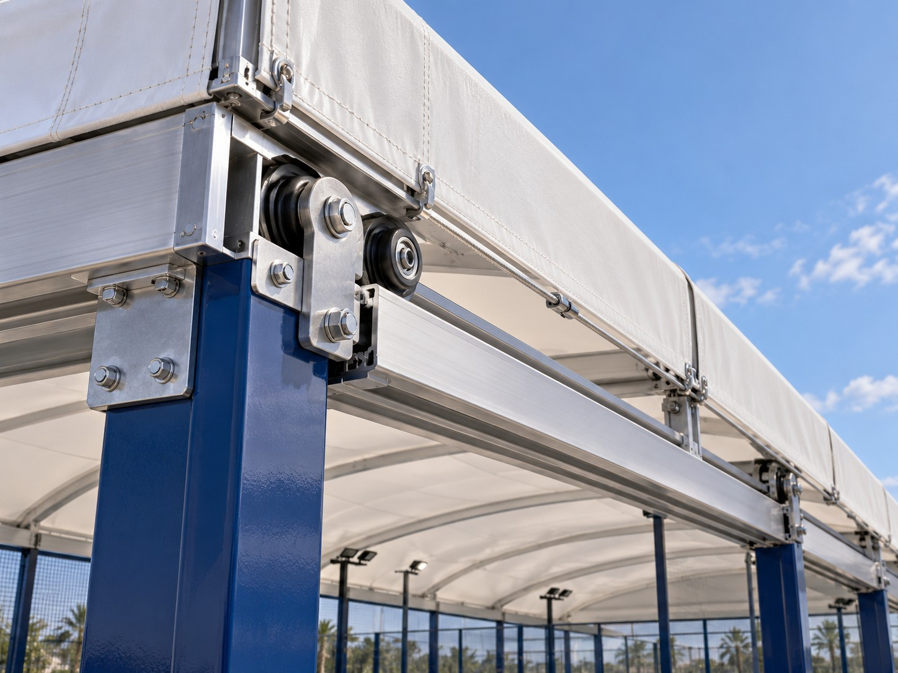

What Public 2026 Cost Guides Suggest
Public 2026 market guides vary widely because they do not price the same scope. Italgreen publishes planning ranges in which a covered outdoor court is materially more expensive than an uncovered court and states that the roof structure alone can add roughly US$15,000–30,000 in its reference model. Another 2026 manufacturer guide publishes one fixed integrated-canopy example at about US$27,200 for that specific configuration.
These figures are useful only as market-planning references. They are not SPORTENVO quotations and should not be transferred directly to another country, wind zone, court quantity or roof geometry. A two-court canopy, a four-court freestanding structure and a motorized retractable roof are different projects.
Ask: what exact weather-protection system, structural span, foundation, drainage and installation scope is included in this quotation?
Fixed vs Retractable vs Electric Tent: Cost Logic
| System | Cost profile | What adds cost |
|---|---|---|
| Fixed roof | Usually the simplest permanent covered solution | Columns, beams, cladding or membrane, foundations, drainage, wind/snow design, installation |
| Retractable roof | Usually higher complexity than fixed | Moving structure, motors, controls, guides, weather limits, electrical work and maintenance access |
| Electric tent | Project-specific flexible cover | Fabric system, drive components, supports, wind strategy, controls and opening/closing operation |
| No roof | Lowest weather-protection capital cost | Potentially higher weather downtime, drainage exposure and revenue volatility |
1. Court Quantity and Roof Span
A roof over one court is not simply one quarter of a four-court roof. Multi-court structures can improve material efficiency, but larger clear spans increase structural demand, member sizes, erection complexity and foundation reactions. Column locations also need to respect circulation, court access and future expansion.
Define the total covered footprint—not only the 20 × 10 m playing rectangle. Include court structure, walkways, roof overhang, gutters, maintenance access and any social or spectator zone that sits beneath the same roof.
2. Fixed Roof Cost Drivers
Fixed systems are mechanically simpler than retractable systems, but they still require a complete structural and civil scope.
- Structural material and section sizes.
- Clear height and clear span.
- Membrane, cladding or roofing material.
- Columns, base plates and connections.
- Wind, rain and snow criteria where relevant.
- Foundation reactions and local civil work.
- Gutters, downpipes and site drainage.
- Lighting coordination.
- Freight, lifting equipment and erection labor.
- Permits, local engineering and inspections.
3. Why Retractable Roofs Cost More to Compare
A retractable roof adds operational flexibility: the venue can open the roof in suitable weather and close it when protection is required. But the structure now has moving parts and operating rules.
In addition to the normal roof structure, buyers should compare motors, drive systems, controls, limit switches, guides, power supply, drainage in open and closed positions, wind operating limits, emergency procedures and maintenance access. A retractable roof quotation that excludes controls or local electrical work may look cheaper without being commercially equivalent.
Review the Padel Court Roof Construction & Planning Guide for the full structural checklist.
4. Electric Tent vs Retractable Structural Roof
SPORTENVO treats Electric Tent and retractable roof as different system families. They should not be compared only by the word “retractable.” One is a flexible weather-protection concept; the other can involve a more substantial moving roof structure. The correct option depends on the venue, wind exposure, clear height, operating strategy and project budget.
See Padel Court with Electric Tent and Padel Court Roof Manufacturer & System for the product-system distinction.
5. Foundations Are Often Missing From the Headline Roof Price
A roof transfers new vertical, lateral and uplift forces into the ground. Those reactions can be substantially different from the court enclosure loads. If a buyer adds a canopy after the court foundation is already complete, new footings, reinforcement or local demolition may be required.
That is why the lowest-cost roof strategy is often not a cheaper roof—it is deciding on the roof before civil work starts. Coordinate the roof columns and reactions with the foundation strategy from the beginning.
6. Drainage Is Part of Roof Cost
A roof creates a large catchment area. The project therefore needs gutters, downpipes, collection points and a legal outfall capable of handling the local design rainfall. If those items are not shown in the roof quotation, they still exist as project costs.
Do not discharge roof water beside the playing base or foundations. Use the Padel Court Drainage Guide to coordinate the full water path.
7. Wind Can Change the Budget Dramatically
Wind exposure affects both the court and the roof. A tall canopy creates a large surface that can produce substantial uplift and lateral reactions. Coastal, rooftop and open-terrain projects may require a very different structure from a sheltered inland site.
Ask the supplier what wind basis has been used, which parts of the system are project-specific and what the local structural engineer must verify. See the High-Wind & Coastal Padel Court Guide.
8. Freight and Installation Can Be a Large Cost Layer
Roof components are often long, bulky and heavy. Large sections, membrane packages, mechanical systems and glass or court materials may require different packing and handling plans. Site lifting access can become a major budget item if cranes, telehandlers or special sequencing are required.
Normalize the commercial boundary:
| Cost line | Questions to ask |
|---|---|
| Factory supply | Which roof structure, membrane/cladding, hardware, controls and drawings are included? |
| Export packing | Are long structural members, motors and sensitive components protected and labeled? |
| International freight | Which Incoterm and destination are quoted? |
| Destination handling | Who pays port charges, inland delivery, unloading and storage? |
| Installation | Local labor, supplier technicians, cranes, lifts, tools and accommodation? |
| Local engineering | Are stamped drawings, permits and inspections included or excluded? |
9. Planning and Permits Can Affect Both Cost and Schedule
Reddit canopy discussions from the UK repeatedly mention permitting and planning as a major practical constraint. One club owner who opened a five-court canopied venue in Greater Manchester described a 14-month planning process. Another 2026 discussion compares steel and fabric canopies partly through the lens of planning and player experience.
Do not assume the cheapest structural solution is the cheapest approved solution. Height, visual impact, noise, drainage, lighting and neighboring properties can all affect the route to approval.
10. Roof Maintenance Has a Lifecycle Cost
A fixed roof needs inspection of structure, coating, cladding or membrane, drainage and fasteners. A retractable system adds motors, controls, moving joints and operating procedures. Electric-tent systems add their own fabric and mechanical maintenance requirements.
Include these lifecycle items in the Padel Court Maintenance Guide rather than treating the roof as maintenance-free.
Public Planning Example: Why Roof Numbers Vary
| Public 2026 source | Published reference | Important limitation |
|---|---|---|
| Italgreen | Covered outdoor turnkey range US$60,000–95,000; roof structure described as roughly US$15,000–30,000 in its reference framework | Market planning guide; project and country scope can differ |
| SportsComplexCN | One fixed integrated canopy example around US$27,200 per set | One specific supplier configuration, not a universal roof price |
| Reddit Australia discussion | Community estimates show a substantial gap between uncovered and roofed four-court projects | Anecdotal community estimates, not verified quotations |
The lesson is not to average these numbers. The lesson is that the roof can materially change total project capital and should be scoped early.
How to Compare Three Roof Quotations
- Normalize court quantity and total covered dimensions.
- Record roof type: fixed, retractable or electric-tent concept.
- Record structural material and member sizes.
- Confirm target clear height.
- Confirm wind and snow basis where applicable.
- Compare membrane or cladding specification.
- Compare foundation reactions and whether foundations are included.
- Compare gutters, downpipes and drainage boundary.
- Compare motors, controls and electrical work for moving systems.
- Compare packing, freight, unloading and lifting.
- Compare installation labor and technical supervision.
- Compare local engineering, permit and inspection scope.
- Compare warranties by structural, fabric/cladding and mechanical component.
- Compare maintenance requirements and spare-part support.
When Paying More for a Roof Can Make Commercial Sense
The roof becomes easier to justify when it protects high-value booking hours. A rainy evening in a strong-demand market can be worth more than a dry Tuesday morning. That is why the correct comparison is between roof cost and protected net revenue, not roof cost and zero.
Use Outdoor Padel Court Without a Roof: Is It Worth It? to model playable hours and weather downtime before choosing a system.
Community Discussions That Informed This Guide
- Padel Court Canopies — steel vs fabric discussion
- Outdoor foundation and covered-court cost discussion
- Australia court-installation and roof budget discussion
- Five-court canopied club and planning discussion
Public Cost References
Need to compare fixed, retractable and electric-tent options?
Send the country, city, court quantity, site dimensions, target clear height, wind conditions, foundation status and preferred weather-protection concept. Compare all options on the same project boundary.
Request Padel Court Roof Proposal →Padel Court Roof Cost FAQ
How much does a padel court roof cost?
There is no universal price. Public 2026 planning guides show that roof scope can add tens of thousands of dollars, but final cost depends on span, structure, loads, foundations, drainage, freight and installation.
Is a fixed roof cheaper than a retractable roof?
Usually it is mechanically simpler, while retractable systems add moving structure, motors, controls and maintenance. Site loads and span can still make a fixed roof expensive.
What is often excluded?
Local foundations, drainage, electrical supply, permits, engineering, cranes, destination handling and installation labor are common exclusions unless listed.
Can I add a roof later?
Sometimes, but early planning is usually more efficient because roof reactions, columns, drainage and lifting access can affect the original civil design.
How do I compare roof types?
Compare protected playing hours, structure, clear height, wind basis, foundations, drainage, controls, installation, maintenance and full delivered project cost.